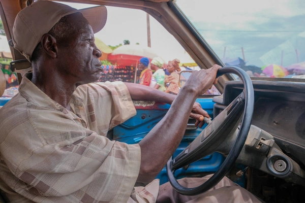
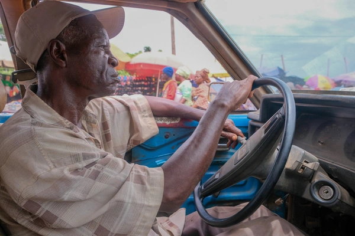

working men
I watched as he and his companion took turns loading the bags of cement from the truck as fast as they could before piling it high on their head. I wonder how much their pay was going to be but I didn`t ask. I have seen this many times to know and recognize what this kind of struggle was. Labourers like him often go for heavy-duty jobs like this one, balancing heavy bags of cement on their head or treading carefully on a plank as they let themselves up and down a tall uncompleted building.
We live in a patriarchal society where the man is recognized as a breadwinner and sole provider for his immediate family. Across social classes, the man is expected to bear the financial and mental weight of providing and taking care of his family. A man`s social class affects his labor decisions. The modern man sees himself as a maker and a fixer. Although men need to work in order to survive and provide for their families, they also work to ascribe meaning and give structure to their lives.
 
